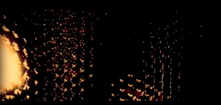

Cine abstracto · Visual Music
Exploración audiovisual basada en estructuras binarias entre sonido e imagen, donde formas abstractas y ritmos visuales dialogan con la composición sonora.
Binary Opposition es una obra de música visual que explora relaciones estructurales entre sonido e imagen a partir de principios de contraste y oposición.
La pieza utiliza formas abstractas, movimientos geométricos y transformaciones visuales sincronizadas con la estructura sonora, generando una experiencia audiovisual donde el ritmo visual funciona como extensión del ritmo musical.
La obra permite analizar la relación entre composición sonora y composición visual dentro del campo de la música visual.
También funciona como referencia para estudiar estrategias de sincronización audiovisual, abstracción visual y traducción de estructuras musicales a lenguaje gráfico.
El trabajo de Edgar Barroso se inscribe dentro de una tradición de cine abstracto y música visual que investiga las relaciones entre percepción, ritmo y estructura audiovisual.
En este contexto, Binary Opposition propone una exploración de contrastes visuales y sonoros que dialogan con prácticas históricas de cine experimental y arte audiovisual contemporáneo.